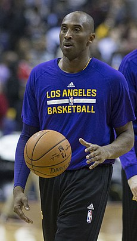
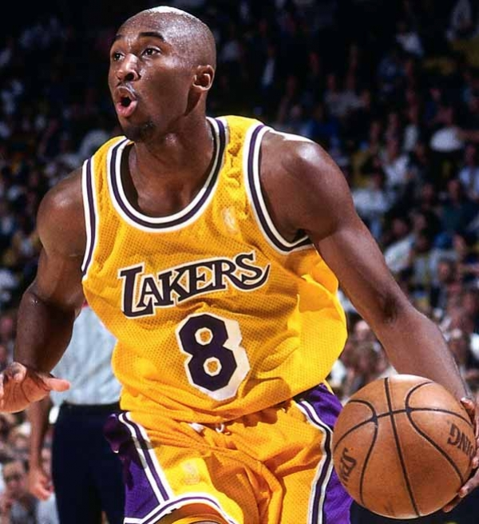

Kobe Bryant

Kobe Bean Bryant (Filadélfia, 23 de agosto de 1978 — Calabasas, 26 de janeiro de 2020) foi um jogador profissional de basquetebol estadunidense. Jogou toda sua carreira como ala-armador no Los Angeles Lakers da National Basketball Association (NBA). Filho de Joe Bryant, ex-jogador do Philadelphia 76ers e antigo técnico do time Los Angeles Sparks da WNBA, é considerado um dos maiores jogadores de todos os tempos. Por outro lado, críticos alegam suas baixas porcentagens de arremessos de campo, de dois e três pontos (ao longo de sua carreira, teve média de 44% em arremessos de dois e 32% em triplos, que até caem nos playoffs), que fazem dele o jogador com mais arremessos perdidos na história da NBA: 14,481 arremessos de campo perdidos na temporada regular (marcou 11,719 de um total de 26,200 arremessos) e 2,485 (marcou 2,014 dum total de 4,499 arremessos nos playoffs), totalizando 16,966 arremessos perdidos.

Foi um dos poucos atletas a ser escolhido no recrutamento da NBA direto do ensino médio para a liga norte-americana. Ao longo de 20 anos de carreira, ganhou cinco campeonatos da NBA, participou 18 vezes do All-Star Game (recorde absoluto), foi eleito 15 vezes como membro da Equipe ideal da NBA, 12 vezes como membro da All-Defensive Team da NBA e foi o Jogador Mais Valioso (MVP) da NBA em 2008.
Kobe foi campeão da NBA nos anos de:
- 2000
- 2001
- 2002
- 2009
- 2010
Recebeu o MVP da temporada em 2008, e nas finais de 2009 e 2010, recebeu o MVP Finals, além de possuir 2 medalhas de ouro em jogos olímpicos, ganhou elas em:
- 2008
- 2012
Kobe em toda sua carreira foi chamado 18x para o All-Star game, onde só são convidados os melhores, ele foi convidado em:
- 1998
- 2000
- 2001
- 2002
- 2003
- 2004
- 2005
- 2006
- 2007
- 2008
- 2009
- 2010
- 2011
- 2012
- 2013
- 2014
- 2015
- 2016
E tendo recebido o MVP do All-Star games nos anos de:
- 2002
- 2007
- 2009
- 2011